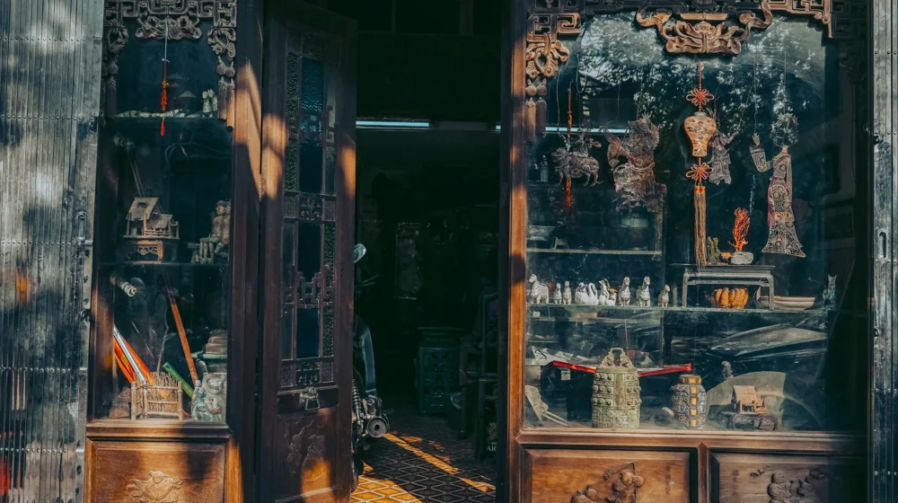

나전칠기 소품 고르기, 실패 없이 만족하는 5가지 핵심 체크리스트
사진: Guilman / Pexels (무료 이미지, 출처 표기)
나전칠기, 무엇을 체크해야 할까요?

선조들의 지혜와 아름다움이 담긴 나전칠기는 보는 이의 시선을 사로잡는 특별한 공예품입니다. 작은 소품 하나만으로도 공간의 품격을 높여주기에 많은 분들이 나전칠기 구매를 고려합니다. 하지만 수많은 제품 속에서 어떤 기준으로 좋은 나전칠기를 골라야 할지 막막하게 느껴질 수 있습니다.
단순히 예쁘다는 이유만으로 구매했다가 기대에 못 미치거나 쉽게 손상되는 경우도 있습니다. 이 글에서는 나전칠기 소품을 구매할 때 반드시 확인해야 할 핵심 기준들을 구체적인 체크리스트 형태로 제시하여, 만족스러운 선택을 돕고자 합니다.
좋은 나전칠기 소품 구별하는 3가지 핵심 기준
나전칠기의 진정한 가치는 재료의 품질과 장인의 기술에서 나옵니다. 구매 전 다음 3가지 기준을 꼼꼼히 살펴보세요.
소품별 나전칠기 활용 가이드: 용도에 맞게 선택하기
나전칠기 소품은 그 종류가 다양하므로, 어떤 용도로 사용할지에 따라 적합한 제품을 선택하는 것이 중요합니다. 주로 구매하는 소품별 포인트를 짚어봅니다.
- 보석함/액세서리함: 내부 마감 상태와 수납 공간의 실용성을 확인합니다. 부드러운 천으로 안쪽을 마감하여 보석이 손상되지 않도록 한 제품이 좋습니다.
- 접시/쟁반: 장식용인지 실사용인지 용도를 명확히 합니다. 실사용 목적이라면 음식물 접촉에 안전한 재료와 마감 처리(예: 식품용 옻칠)가 되었는지 문의하는 것이 좋습니다.
- 벽걸이 장식/액자: 공간의 크기와 분위기를 고려하여 디자인과 색상을 선택합니다. 설치가 용이하고 벽에 부담을 주지 않는 경량 제품도 고려해볼 수 있습니다.
- 명함집/필기구: 휴대성이 중요하므로 견고함과 함께 가벼운 소재로 제작되었는지 확인합니다. 자개 문양이 너무 튀지 않으면서도 세련된 디자인이 일상에서 활용하기 좋습니다.
오래도록 아름답게, 나전칠기 소품 관리 및 보관법
나전칠기는 특별한 관리가 필요한 것처럼 보이지만, 몇 가지 주의사항만 지키면 오래도록 아름다움을 유지할 수 있습니다. 2026년 9월 기준, 다음 사항들을 참고하세요.
직사광선과 고온다습한 환경은 나전칠기에 치명적입니다. 자개의 변색을 유발하고 옻칠이 갈라지거나 벗겨질 수 있으므로, 햇볕이 직접 닿지 않고 습기가 적은 곳에 보관하는 것이 좋습니다. 또한 온도 변화가 심한 곳도 피해야 합니다.
청소 시에는 부드러운 마른 천으로 가볍게 닦아 먼지를 제거합니다. 오염이 심할 경우, 물에 적신 후 물기를 꼭 짠 천으로 부드럽게 닦고 즉시 마른 천으로 물기를 제거해야 합니다. 화학 세제나 연마제는 표면을 손상시킬 수 있으니 사용하지 않습니다.
나전칠기는 충격에 약하므로 떨어뜨리거나 부딪히지 않도록 주의해야 합니다. 특히 자개 부분은 충격에 의해 쉽게 떨어지거나 깨질 수 있습니다. 평소에는 안정적인 장소에 두는 것이 좋습니다. 정확한 사항은 구매처나 장인에게 문의하여 해당 제품에 맞는 관리법을 확인하시길 권장합니다.
믿을 수 있는 나전칠기 소품 구매처 고르는 팁
어디서 구매하느냐에 따라 나전칠기의 품질과 신뢰도가 달라질 수 있습니다. 다음 구매처들을 고려해볼 수 있습니다.
- 전통 공예 전문점 및 갤러리: 직접 제품을 보고 장인의 설명을 들을 수 있어 좋습니다. 한국문화재재단에서 운영하는 매장이나 국립무형유산원 내 공예품 판매점 등 공식 기관과 연계된 곳은 더욱 믿을 수 있습니다.
- 온라인 전문 쇼핑몰: 상세한 제품 설명과 구매 후기를 꼼꼼히 확인하고, 판매자의 신뢰도와 반품/교환 정책을 반드시 숙지해야 합니다.
- 백화점 및 면세점: 비교적 높은 품질의 제품을 안정적으로 구매할 수 있습니다. 다만 가격대가 높을 수 있습니다.
- 공예 전시회 및 박람회: 다양한 장인의 작품을 한자리에서 비교해볼 수 있으며, 때로는 장인에게 직접 구매할 기회도 있습니다.
나전칠기 소품 구매 전, 자주 묻는 질문
나전칠기 구매를 망설이는 분들이 자주 궁금해하는 질문들을 모았습니다.
Q: 나전칠기 소품의 가격은 왜 차이가 큰가요?
A: 나전칠기 가격은 주로 사용된 자개의 종류와 양, 옻칠의 횟수, 문양의 복잡성, 그리고 장인의 숙련도와 명성에 따라 크게 달라집니다. 희귀한 자개나 여러 겹의 정교한 옻칠, 고난도 기술이 요구되는 문양일수록 가격이 높습니다.
Q: 온라인으로 나전칠기 소품을 구매해도 괜찮을까요?
A: 온라인 구매도 가능하지만, 실물을 직접 볼 수 없다는 단점이 있습니다. 판매자가 제공하는 제품 사진과 상세 설명을 면밀히 검토하고, 가능한 한 고해상도 이미지를 통해 자개의 빛깔과 옻칠 마감 상태를 확인해야 합니다. 신뢰할 수 있는 판매처에서 구매하고, 반품 정책을 미리 확인하는 것이 중요합니다.
Q: 짝퉁(모조품) 나전칠기를 구별하는 방법이 있나요?
A: 진품 나전칠기는 자개 특유의 영롱한 빛깔과 깊이 있는 옻칠 광택이 특징입니다. 모조품은 플라스틱이나 인조 자개를 사용하여 빛깔이 덜 자연스럽고, 옻칠 대신 다른 도료를 사용해 광택이 균일하지 않거나 표면이 거칠 수 있습니다. 가능하면 전문가의 감정을 받거나, 국립무형유산원 등 공신력 있는 기관의 인증을 받은 제품을 선택하는 것이 안전합니다.
🔗 이 글도 함께 보면 좋아요: K-공예 원데이클래스, 뭘 만들어볼까? 초보도 망설임 없이 즐기는 꿀팁
관련 추천 상품
이 포스팅은 쿠팡 파트너스 활동의 일환으로, 이에 따른 일정액의 수수료를 제공받습니다.